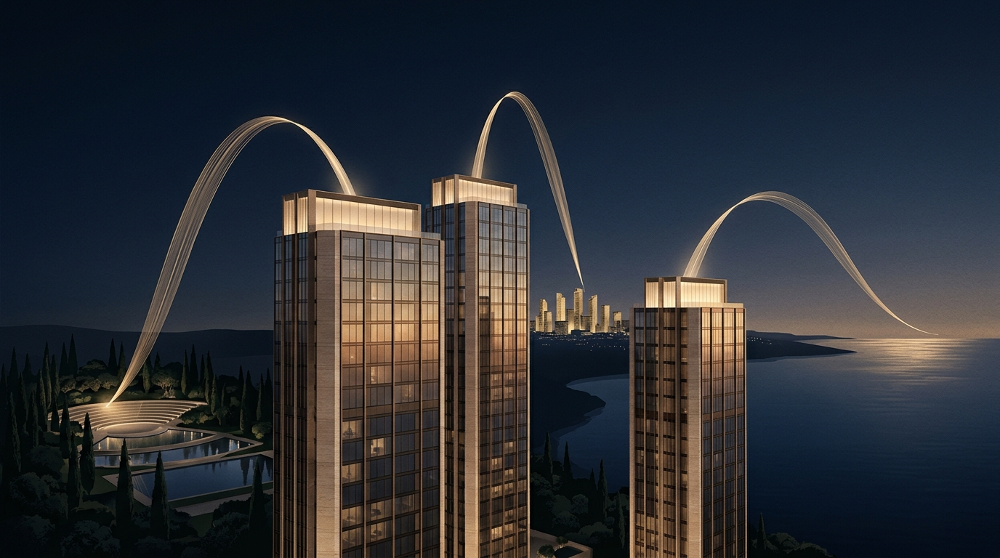
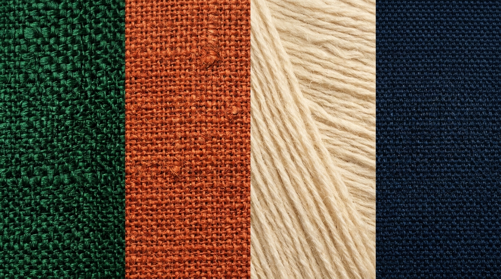

Ataşehir Modern’e yeni taşınan bir misafir, çatıdan havalandığı anda moda, sanat, elektronik, online terzi ve hassas tarım danışmanlığıyla tek uzamsal sahnede buluşur.
Gastronomi, su amfitiyatrosu, çağdaş galeri art ve akşam buluşmaları — çatıdan 1.2 km süzülüş.
Finans merkezi fırsat akışı, elektronik, hızlı iş bağlantıları ve selinahbap.com 50K komuta kapısı.
Marmara rüzgarı, açık hava konserleri, miting/festival sahnesi ve deniz kıyısı özgürlüğü.
Ataşehir çekirdeğini İstanbul’un kültür, moda ve ticaret halkasına bağlayan üst çember.

Affair terzileri iki mezura ile Ataşehir Modern dairenize gelir; beden geometrisi ve yasak-renk kuralı çıkarır.
Pantone iplik hassasiyetiyle aynı bilimsel titizlik: Gökçeada 1308 parsel v3 verisi, teras/balkon veya arazi danışmanlığı.
Kumaş ve renk kararlarınız bir sonraki sanat sıçramasına veri besler; 4-Front Stüdyo ve HD Video Stüdyo canlıda.
Finanskent fırsatları, Maltepe konser takvimi ve 1903 GPT makine manifesti tek canlı çatı altında.